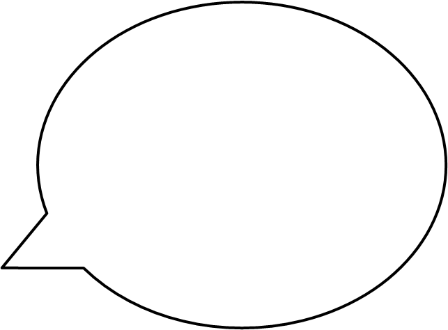
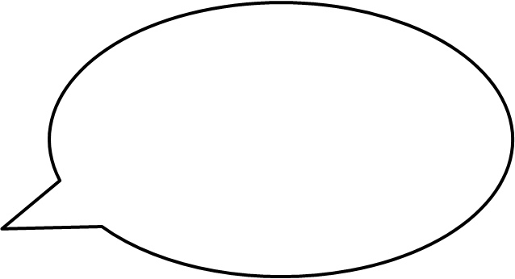

Olha como a natureza é curiosa! Vocês já observaram que alguns animais são capazes de regenerar partes de seus corpos?
É o que ocorre, por exemplo, com lagartixas que vemos em nossa casa que perdem a ponta da cauda propositalmente com o objetivo dar um “petisco” aos predadores, escapando da morte certa!!

Contudo, depois de algum tempo, estas são capazes de reconstituir as partes perdidas. Danadinha a lagartixa!
Embora nós, seres humanos, não possamos substituir uma perna ou um braço perdidos, nosso corpo está constantemente regenerando tecidos como sangue e pele. Quando machucamos ou doamos sangue, por exemplo, as células sanguíneas perdidas devem ser repostas.
Isso só é possível graças a existência de células especializadas que permitem essa regeneração que são chamadas de “células tronco”
Quer saber mais sobre estas células? Então preste atenção no quadro!